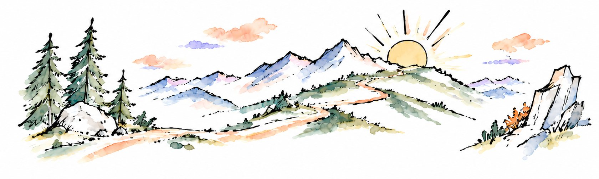
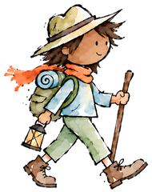
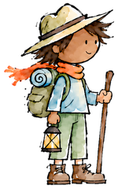

Dave the Divorce Doula
Supporting grief, clarity, and growth



This is one of the most painful and transformative experiences of your life. You are navigating difficult emotions while learning an unfamiliar process and making high-stakes decisions. How you move through this now will shape your emotional well-being, finances, and quality of life for years to come.
You deserve support during this relatively short but pivotal chapter. Our sessions make space to understand and heal the emotional pain this experience brings up. Separating the emotional work from the legal process allows you to make sound decisions that move the divorce toward resolution with less conflict, lower costs, and less risk of costly mistakes.
You are able to learn from the valuable lessons and insights my clients and I gained through our own difficult experiences. I help you understand how different choices unfold, recognize hidden risks and costs, and learn from the shifts in perspective that have helped others let go, heal, and move forward.
This isn’t about the divorce. It’s about you stepping into a better life.
I’m here for the whole journey: mourning the death of the life you thought you would have, finding your way through the valley of darkness, and recognizing the new life you are already creating.